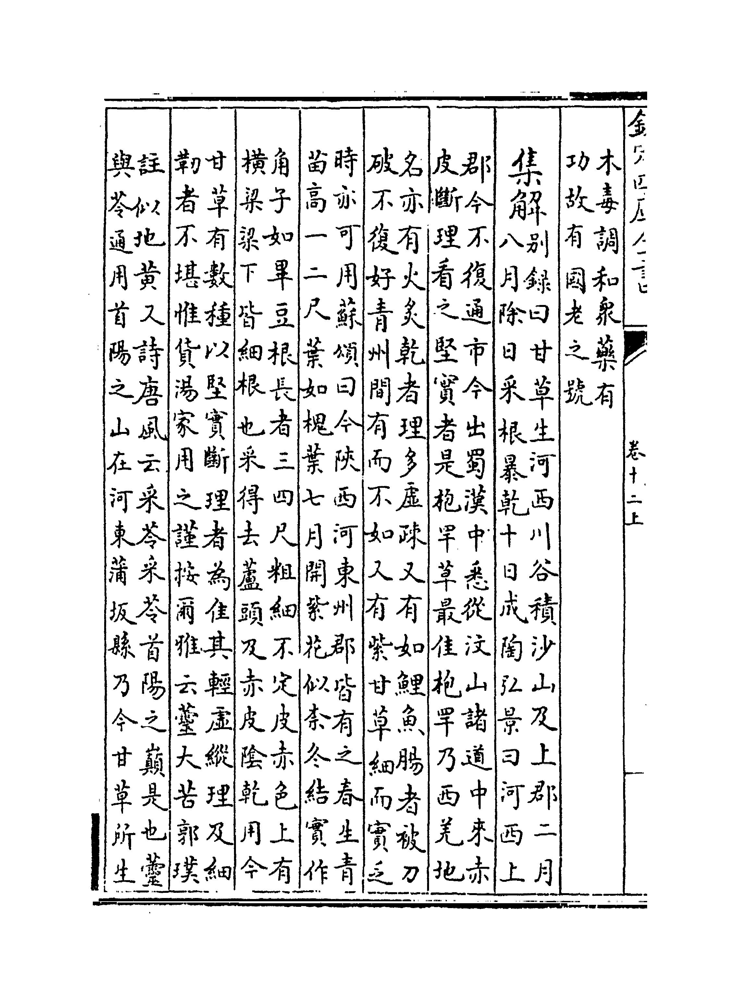
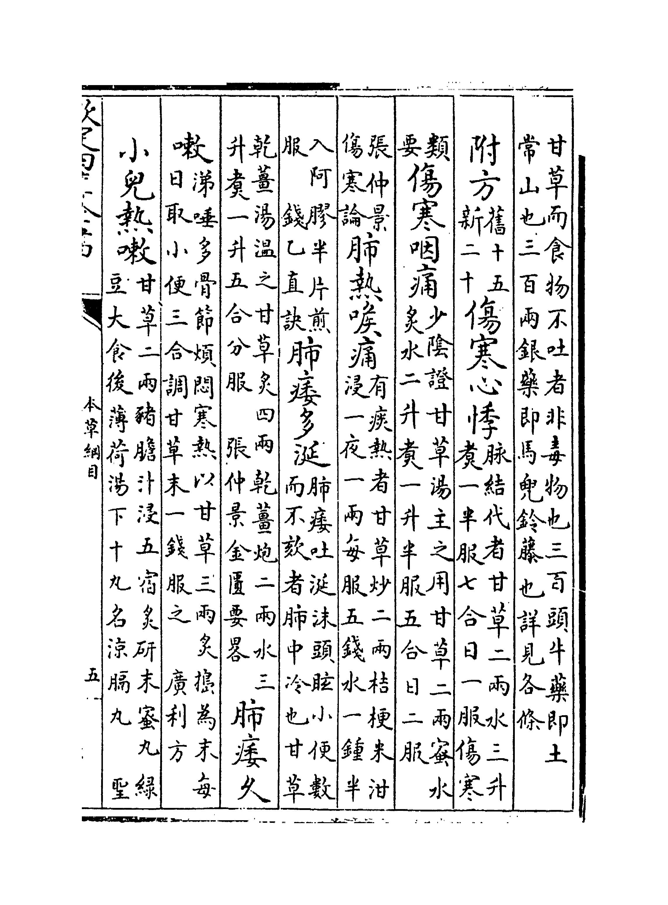
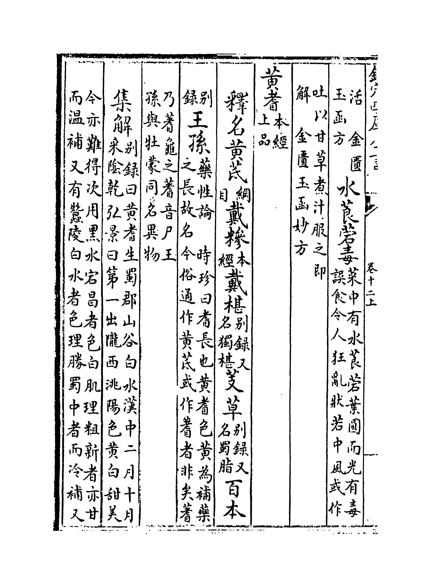
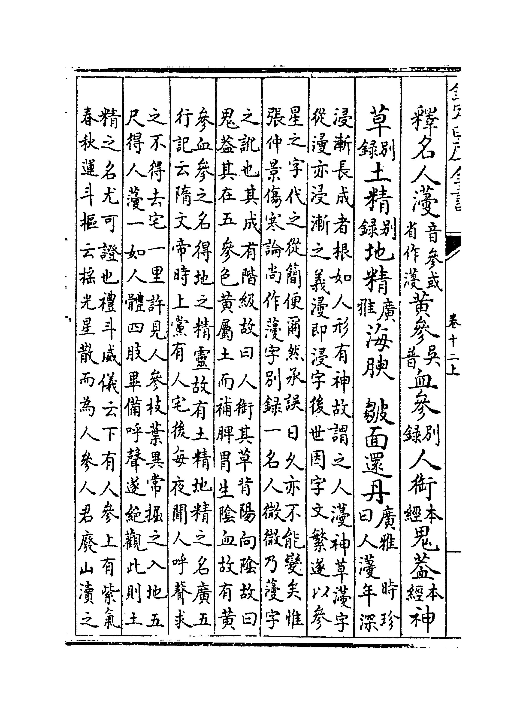
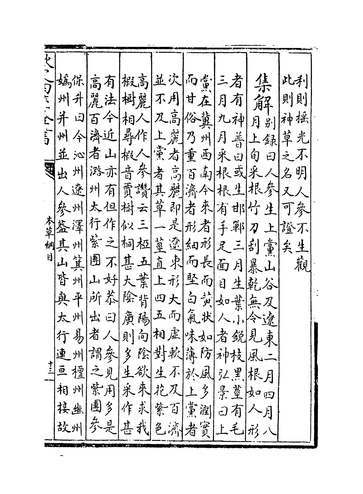
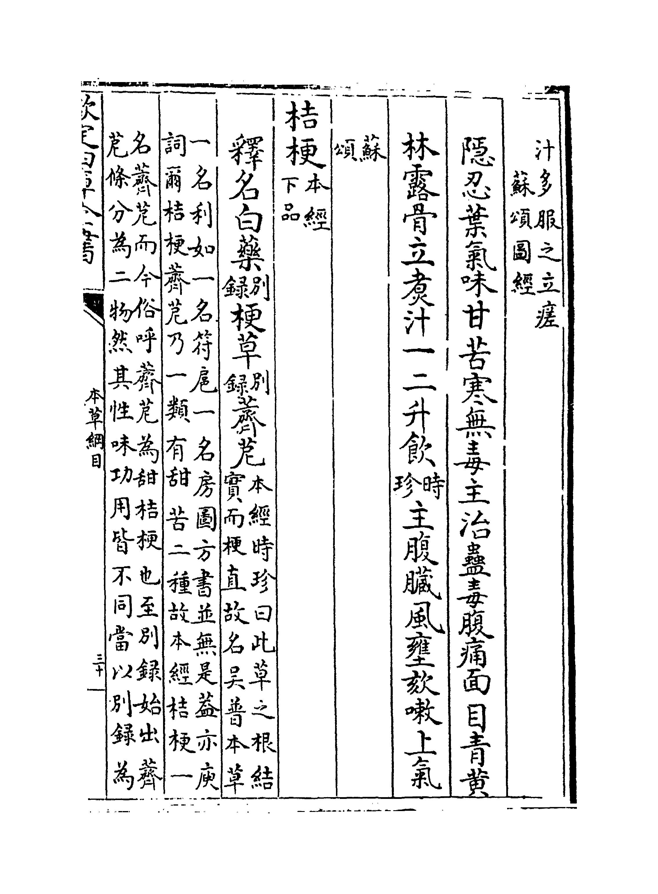

本草綱目 卷十二上 · six-page pilot · transcription against scan
Line 1 is the rightmost column of the scan; columns read right to left. Small two-column notes are joined (right column, then left). Record differences in scan_verify.xlsx. Transcription: Kanseki Repository (CC BY-SA 4.0). Scans: public domain.
036-1b · 甘草 集解: places, cited authors, cited works

- 1木毒調和衆藥有功故有國老之號
- 2集解别録曰甘草生河西川谷積沙山及上郡二月八月除日采根暴乾十日成陶𢎞景曰河西上
- 3郡今不復通市今出蜀漢中悉從汶山諸道中來赤皮斷理看之堅實者是枹䍐草最佳枹䍐乃西羌地
- 4名亦有火炙乾者理多虚疎又有如鯉魚腸者被刀破不復好青州間有而不如又有紫甘草細而實乏
- 5時亦可用蘇頌曰今陜西河東州郡皆有之春生青苗高一二尺葉如槐葉七月開紫花似柰冬結實作
- 6角子如畢豆根長者三四尺粗細不定皮赤色上有横梁梁下皆細根也采得去蘆頭及赤皮隂乾用今
- 7甘草有數種以堅實斷理者為佳其輕虚縱理及細靭者不堪惟貨湯家用之謹按爾雅云䖅大苦郭璞
- 8註似地黄又詩唐風云采苓采苓首陽之巔是也䖅與苓通用首陽之山在河東蒲坂縣乃今甘草所生
Internet Archive 06048793.cn image n11 · Commons DjVu page 12 (to confirm) · legacy OCR CER 0.962
036-5a · 甘草 附方: prescriptions (ingredient names test the scope rules)

- 1甘草而食物不吐者非毒物也三百頭牛藥即土常山也三百兩銀藥即馬兜鈴藤也詳見各條
- 2附方舊十五新二十傷寒心悸脉結代者甘草二兩水三升煑一半服七合日一服傷寒
- 3類要傷寒咽痛少隂證甘草湯主之用甘草二兩蜜水炙水二升煑一升半服五合日二服
- 4張仲景傷寒論肺熱㗋痛有痰熱者甘草炒二兩桔梗米泔浸一夜一兩毎服五錢水一鍾半
- 5入阿膠半片煎服 錢乙直訣肺痿多涎肺痿吐涎沫頭眩小便數而不欬者肺中冷也甘草
- 6乾薑湯温之甘草炙四兩乾薑炮二兩水三升煑一升五合分服 張仲景金匱要畧肺痿乆
- 7𠻳涕唾多骨節煩悶寒熱以甘草三兩炙搗為末每日取小便三合調甘草末一錢服之 廣利方
- 8小兒熱𠻳甘草二兩豬膽汁浸五宿炙研末蜜丸緑豆大食後薄荷湯下十丸名涼膈丸 聖
Internet Archive 06048793.cn image n18 · Commons DjVu page 19 (to confirm) · legacy OCR CER 0.968
036-7b · 黃耆 opens: entry heading, 釋名, 集解

- 1活函金匱玉 方水莨菪毒菜中有水莨菪葉圓而光有毒誤食令人狂亂狀若中風或作
- 2吐以甘草煮汁服之即解 金匱玉函妙方
- 3黄耆本經上品
- 4釋名黄茋綱目戴糝本經戴椹别録又名獨椹芰草别録又名蜀脂百本
- 5别録王孫藥性論名時珍曰耆長也黄耆色黄為補藥之長故 今俗通作黄茋或作蓍者非矣蓍
- 6乃蓍龜之蓍音尸王孫與牡蒙同名異物
- 7集解别録曰黄耆生蜀郡山谷白水漢中二月十月采隂乾𢎞景曰第一出隴西洮陽色黄白甜美
- 8今亦難得次用黒水宕昌者色白肌理粗新者亦甘而温補又有蠶陵白水者色理勝蜀中者而冷補又
Internet Archive 06048793.cn image n23 · Commons DjVu page 24 (to confirm) · legacy OCR CER 0.995
036-12b · 人參 釋名: many alternative names

- 1釋名人薓音參或省作蓡黄參呉普血參别録人䘖本經鬼葢本經神
- 2草别録土精别録地精廣雅海腴 皺面還丹廣雅薓時珍曰人 年深
- 3浸漸長成者根如人形有神故謂之人薓神草薓字從&KR1171;亦浸漸之義&KR1171;即浸字後世因字文繁遂以參
- 4星之字代之從簡便爾然承誤日乆亦不能變矣惟張仲景傷寒論尚作薓字别録一名人微微乃薓字
- 5之訛也其成有階級故曰人衘其草背陽向隂故曰鬼葢其在五參色黄屬土而補脾胃生隂血故有黄
- 6參血參之名得地之精靈故有土精地精之名廣五行記云隋文帝時上黨有人宅後毎夜聞人呼聲求
- 7之不得去宅一里許見人參枝葉異常掘之入地五尺得人薓一如人體四肢畢備呼聲遂絶觀此則土
- 8精之名尤可證也禮斗威儀云下有人參上有紫氣春秋運斗樞云揺光星散而為人參人君廢山瀆之
Internet Archive 06048793.cn image n33 · Commons DjVu page 34 (to confirm) · legacy OCR CER 0.974
036-13a · 人參 集解: producing regions

- 1利則揺光不明人參不生觀此則神草之名又可證矣
- 2集解别録曰人參生上黨山谷及遼東二月四月八月上旬采根竹刀刮暴乾無令見風根如人形
- 3者有神普曰或生邯鄲三月生葉小鋭枝黒莖有毛三月九月采根根有手足面目如人者神𢎞景曰上
- 4黨在冀州西南今來者形長而黄状如防風多潤實而甘俗乃重百濟者形細而堅白氣味薄於上黨者
- 5次用高麗者高麗即是遼東形大而虚軟不及百濟並不及上黨者其草一莖直上四五相對生花紫色
- 6高麗人作人參讚云三椏五葉背陽向隂欲來求我椵樹相尋椵音賈樹似桐甚大隂廣則多生采作甚
- 7有法今近山亦有但作之不好恭曰人參見用多是高麗百濟者潞州太行紫團山所出者謂之紫團參
- 8保升曰今沁州遼州澤州箕州平州易州檀州幽州嬀州并州並出人參葢其山皆與太行連亘相接故
Internet Archive 06048793.cn image n34 · Commons DjVu page 35 (to confirm) · legacy OCR CER 0.98
036-30a · 桔梗 opens: a name a plain GBIF lookup gets wrong

- 1汁多服之立瘥 蘇頌圖經
- 2隠忍葉氣味甘苦寒無毒主治蠱毒腹痛面目青黄
- 3林露骨立煑汁一二升飲時珍主腹臓風壅欬𠻳上氣
- 4蘇頌
- 5桔梗本經下品
- 6釋名白藥别録梗草别録薺苨本經時珍曰此草之根結實而梗直故名吴普本草
- 7一名利如一名符扈一名房圖方書並無是葢亦庾詞爾桔梗薺苨乃一類有甜苦二種故本經桔梗一
- 8名薺苨而今俗呼薺苨為甜桔梗也至别録始出薺苨條分為二物然其性味功用皆不同當以别録為
Internet Archive 06048793.cn image n68 · Commons DjVu page 69 (to confirm) · legacy OCR CER 1.006